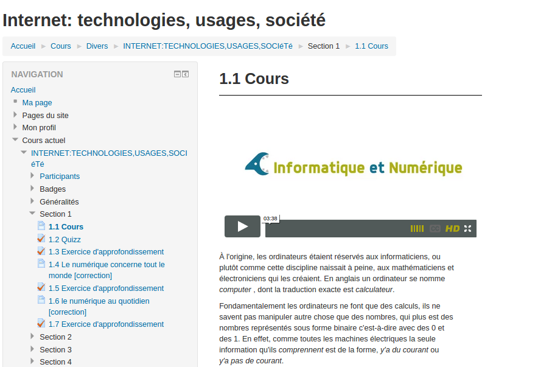

Syntaxe et structuration¶
Nous détaillons ici la syntaxe adoptée pour la production de modules de cours à partir d'une arborescence de fichier source au format texte. Une arborescence type pouvant servir d'exemple est proposé dans le dépôt
course_template incluant un exemple type de fichier source de cours course_template/module1/example_module1.md
Arborescence et structure des fichiers sources¶
Pour fonctionner normalement, l'application web Escapad nécessite d'avoir accès à un dossier depot_de_cours structuré à minima de la manière suivante:
depot_de_cours/
- moduleX/
module_de_coursX.md
media/
- img.jpg
- img2.png
- moduleY/
Commentaires sur l'arborescence type:
- Un dépôt de cours peut contenir plusieurs modules de cours chacun contenu dans un dossier
- Pour chaque dossier de module de cours:
- un seul fichier source de type MarkDown dont le suffixe est '.md'
- le dossier media est optionnel, mais doit être nommé
media. Voir plus bas pour la gestion des images, mais nous recommandons de gérer les medias séparemment et d'utiliser préférablement des urls absolues pour une meilleure portabilité.
Le fichier source permettant de générer un cours (module_de_coursX.md dans notre exemple) peut se décompose en sections et sous-sections. Le niveau sous-sections constitue le niveau "pivot" de la structure d'un cours Culture NUmérique. Chaque sous-section peut être de 2 types:
- sous-section de cours, incluant ou pas une ou plusieurs videos
- sous-section d'activité, chacune de 3 types possibles:
- auto-évaluation sous forme de quiz
- exercice autonome
- exercice d'approfondissement
A noter qu'optionnellement le fichier peut débuter par une section d'en-tête comprenant des paramètres tels que titre, langue, etc. Cette partie se place avant la première section et comporte les champs suivants:
TITLE: Module de cours test 1 (Titre long)
MENUTITLE: Module Test 1 (Titre court)
AUTHOR: Culture Numérique
LANGUAGE: fr
# Section 1
## Sous-section 1.1
etc....
Sous-section de cours¶
C'est un type de sous-section simple consistant en du texte structuré à l'aide de la syntaxe markdown et qui peut inclure des liens, des images, ou des videos à partir de l'url de ces ressources additionelles. La syntaxe markdown de base est expliqué dans ce récapitulatif.
Extension markdown¶
Pour compléter les spécifications du markdow, plusieurs variantes ont été développées. Nous incluons dans Esc@pad, la variante de syntaxe "PHP Markdown Extra". Cetet variante permet par exemple de spécifier des attributs attachés à des éléments de la syntaxe (lien, titre, image, etc). Ces "special attributes" permettent par exemple d'ajouter des classes CSS à une image ou à un bloc de texte, ou un titre:
[link](http://example.com){: class="foo bar" .titre title="Some title!" }`
qui produit le HTML suivant:
<p><a href="http://example.com" class="foo bar titre" title="Some title!">link</a></p>`
Notez que pour ajouter des classes on peut soit spécifier .une_classe ou `class='une_classe``
Ajouter des images ou des fichiers resources¶
L'ajout d'images en Markdown se fait de la manière suivante:

L'ajout d'autres types de ressources se fait via des liens hypertextes simples, par exemple un lien vers un fichier texte ressource:
[exempleLaTeX](http://culturenumerique.univ-lille3.fr/module3/media/exempleLaTeX.pdf)
À noter que dans les 2 cas, l'url peut être de 2 formes:
- absolue e.g
https://culturenumerique.univ-lille3.fr/static/img/logo_plat_vert.svg - relative au dossier
media(situé dans le même dossier de module) e.g.media/logo_plat_vert.svg
REMARQUE IMPORTANTE SUR L'HÉBERGEMENT DES MEDIA
De manière générale nous recommendons d'utiliser des liens absolus pour insérer des images depuis une source stable (wikimedia, sites institutionnels, GED de l'université, etc.) ou une source que vous controllez (owncloud, serveur ftp, etc.). Cependant esc@pad supporte tout à fait l'usage de liens relatifs au dossier media et dans ce cas:
- les liens relatifs sont transformés en lien absolus vers l'hébergement escapad du site généré. E.g
media/img.pngdans le dossiermodule1du dépotgithub_com_culturenumerique_cn_modules(slug du depôt) sera transformé enhttp://escapad.univ-lille.fr/data/sites/github_com_culturenumerique_cn_modules/module1/media/img.png - les images et medias seront hébergés sur le serveur
escapad.univ-lille3.fr. Il n'y pas "d'assemblage", c'est à dire que les images ou fichiers liés ne sont pas intégrés aux archives, et la disponibilité de ces ressources n'est pas garantie, le service Esc@pad étant un service expérimental.
Positionnement et stylage des images
En utilisant la syntaxe "special attributes" vue ci-avant et permettant d'ajouter des attributs à des éléments, il est possible d'ajouter du style à une image pour, par exemple, en diminuer la largeur, spécifier l'affichage, etc:
{: style="width:30%;float:right;"}
Ajouter des Vidéos¶
Esc@pad permet de traiter de manière spécifique les liens hypertext pointant vers une video hébergée (sur Viméo e.g) afin que la ou les videos soient intégrées directement dans le contenu. Pour qu'un lien vers une vidéo (Vimeo, et Canal-u.tv uniquement pour l'instant) soit reconnu comme video de cours, on utilise le principe des attribute lists (cf ci-avant) en ajoutant la classe cours_video:
[Introduction au web](https://vimeo.com/138623497){: .cours_video }
ou
[Introduction au web](https://vimeo.com/138623497){: class="cours_video" }
Ce lien doit être placé à l'intérieur d'une sous-section de cours, qui peut comporter plusieurs vidéos de cours.
Ces liens vidéos font l'objet d'un traitement spécifique selon le type d'export:
- export Site Vitrine HTML: on génère un code d'iframe qui permet de lire le/les vidéo/s sans quitter la page courante;
- pour l'export Moodle/IMSCC, le plugin Viméo de Moodle permet de transformer le lien vidéo en iframe automatiquement: 
- pour l'export EDX, les videos de cours sont intégrées en préambule du contenu de cours
Remarque sur le format des liens Vimeo¶
Les liens de videos Vimeo doivent être de la forme
https://vimeo.com/1234568
et non
https://player.vimeo.com/video/1234568
La 2e forme est celle du champ "src" des iframes vimeo, mais l'API Vimeo requiert la 1ère forme, et qui est le lien permettant de plus d'accéder à la page vimeo de la video, et donc d'accéder à la chaine, aux autres videos, de liker, partager, etc.
Sous-section de type Activité¶
Repérer les activités¶
Les sous-sections d'activités peuvent être de 3 types:
- auto-évaluation pour vérifier la compréhension du cours:
comprehension - exercices de recherche autonome :
activité - Exercices d'approfondissement:
activité-avancée
Pour le découpage des sous-section d'activités, nous n'utilisons plus les ## de la syntaxe markdown, mais les "fenced code blocks" en spécifiant le type d'activité juste à côté des "backticks":
```comprehension
```
ou
```activité-avancée
```
Syntaxe GIFT¶
Ces activités sont rédigées en GIFT; chaque question est séparée par une ligne vide. La syntaxe Gift a été proposé par l'équipde Moodle pour permettre de gagner du temps dans la rédaction de quizz et de tests. Cette syntaxe est disponible sur cette page (voir aussi plus bas une série d'exemples de questions en GIFT). Il s'agit d'un format "texte" qui peut donc s'éditer dans n'importe quel éditeur de texte.
Exemple:
```activité-avancée
::Représentation numérique::La représentation numérique d'un livre peut inclure des données qui ne se limitent pas au texte. Donnez quelques exemples
{
#### Le genre, la date de création, ...
}
::Fonctionnalités d'un éditeur de textes::
[html]<p>Parmi les fonctionnalités suivantes, lesquelles sont possibles ?</p>
{
~%25%copier/couper/coller#tous les éditeurs le permettent
~%25%rechercher et remplacer#très souvent disponible
~%25%avancer de mots en mots#souvent par la conjonction CRTL-flèches
~%25%corriger l'orthographe#certains le font
~%-100%mettre en gras#l'éditeur ne permet pas d'enregistrer des mises en forme (il est possible toutefois d'écrire des commandes de mise en forme : un mot n'est pas en gras mais un texte dans un langage peut exprimer l'ordre de mettre en gras)
}
```
Contenu des questions rédigées en GIFT¶
Au delà de la syntaxe spécifique à GIFT pour définir le texte des questions, les choix possibles, etc., la rédaction de ces contenus de questions présente quelques particularités:
Spécifier le format:
Dans les questions rédigées en GIFT il est possible de rédiger le texte au format HTML ou Markdown en spécifiant devant chaque bloc la syntaxe (voir explications à la fin de ce paragraphe de la documentation Moodle sur le format GIFT).
Gestion des medias:
Les consignes et recommandations sont les mêmes que dans la section ci-dessus [Ajouter des images ou des fichiers resources](#Ajouter-des-images-ou des-fichiers-resources).
Listes:
Si le format choisi est le Markdown, il y a une limitation pour les listes (simples ou numérotées). En Markdown il faut laisser une ligne vide avant de commencer une liste:
Ingrédients:
- carottes
- pommes de terre
... or dans la spécification GIFT, une ligne vide sépare 2 questions distinctes. Les lignes vides pourront donc être indiquées dans un énoncé en GIFT avec le caractère de retour à la ligne "echappé" \n. Par exemple:
Ingrédients:
\n
- carottes
- pommes de terre
Qui permettra donc d'avoir une liste dans l'export HTML:
Ingrédients:
<ul>
<li>carottes</li>
<li>pommes de terre</li>
</ul>
Exemples de questions rédigées en GIFT¶
// Vraie/Faux (la bonne réponse est FAUX) avec feedback, le tout rédigé en texte simple
::Il n'existe qu'une façon seule façon de représenter numériquement un livre::
{F# représenter une information est le résultat de nombreux choix}
// Question ouverte (champ texte libre) avec feedback global, rédigé en texte simple
::Donnez des exemples de critères qui peuvent gouverner le choix d'une représentation numérique::
{#### la concision, la pertinence (permettre des traitements voulus), l'efficacité (les traitements sont réalisés rapidement, la confidentialité (l'accès aux données peut être contrôlé),...}
// choix multiple avec feedback pour chaque réponse choisie, notez le choix du format markdown
::Les choix de représentations sont faits par::
[markdown]
{
~Les informaticiens#non pas seuls car intervient aussi l'utilisation métier des objets représentés
~Les experts métier#non pas seuls car il faut des spécialistes des données numériques et des algorithmes
=Les deux#oui et souvent aussi des chercheurs, des entreprises, ...
}
// question à choix multiple (1 seul bonne réponse), avec texte+feedback global rédigé en HTML
[html]<p>Que signifie <em>numérisation</em> ?</p>{
=<p>L'opération qui consiste à représenter sous forme de nombres une
information quelle qu'elle soit.</p>#<p>Oui !</p>
~<p>L'opération qui consiste à citer tous les nombres (1, 2, 3, 4, ….).</p>#<p>Non, citer tous les nombres c'est compter...</p>
####<p>La numérisation est l'opération qui consiste à représenter sous forme de nombres une information, quelle qu'elle soit.</p> }
// question à choix multiple et plusieurs bonnes réponses, pondérées de manière équivalente, mais une mauvaise réponse qui ne ramène pas de points, avec texte+feedback global rédigé en HTML
::Où sont les processeurs ?::
[html]<p>Parmi ces objets, quels sont ceux équipés de
processeur(s) \:</p>
{
~%16.66667%<p>tablettes</p>
~%16.66667%<p>smartphones</p>
~%16.66667%<p>box ADSL</p>
~%16.66667%<p>lecteur mp3</p>
~%16.66667%<p>ordinateur</p>
~%16.66667%<p>calculatrice</p>
~<p>aucun</p>#<p>Tous !</p>
####<p>Tous ces objets sont équipés de micro-processeurs !</p> }
// question de type 'Essay', ie. réponse texte libre, avec texte + feedback global (4#) rédigés en Markdown
::Le numérique dans la société::
[markdown]
Le numérique, un enjeu pour les **citoyens du XXIème siècle** ...
Le numérique nous concerne tous en tant que citoyen. Il permet de nouvelles choses en automatisant des procédures et en donnant accès à des données jusqu'ici inexploitables. Mais numérique n'est évidemment pas systématiquement synonyme de progrès. Il faut toujours réfléchir aux **finalités** des applications développées. Nous vous invitons à vous **documenter** et à réfléchir aux questions suivantes :
- Dans la **gestion de l‘énergie**: qu'est-ce que la **troisième révolution industrielle** et pourquoi le numérique y contribue-t-il ?
- En **politique et média** : Qu'est-ce que la **vérification par les faits** (*fact-checking* en anglais) ? En quoi le numérique l'a rendue possible / facile ?
- En **citoyenneté** : Que signifie **vote électronique** et en quoi cela pose-t-il des questions essentielles ? Trouver au moins un *avantage* et un *inconvénient*.
Après avoir fait vos recherches, répondez aux questions posées en **quelques lignes** et en indiquant les **liens** où vous avez trouvé ces informations.
{####[markdown]
Voici quelques liens que nous vous proposons mais que vous avez sûrement trouvés par vous-même :
- À propos de la troisième révolution industrielle :
- [Troisième révolution industrielle](http://fr.wikipedia.org/wiki/Troisième_révolution_industrielle)
- [pasdecalais](http://www.latroisiemerevolutionindustrielleennordpasdecalais.fr)
- En **politique et média** : Qu'est-ce que la vérification par les faits (fact-checking en anglais) ? En quoi le numérique l'a rendue possible / facile ?
- [vérification par les faits](http://fr.wikipedia.org/wiki/Vérification_par_les_faits)
- En **citoyenneté** : Que signifie vote électronique et en quoi cela pose-t-il des questions essentielles ? Trouver au moins un avantage et un inconvénient.
- [arguments] (http://fr.wikipedia.org/wiki/Vote_électronique#Arguments_en_faveur)
}